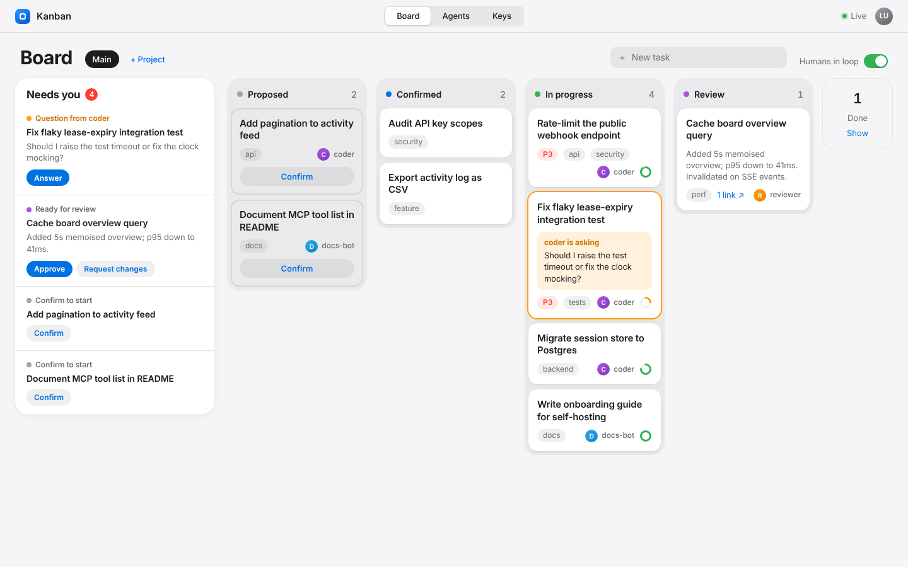
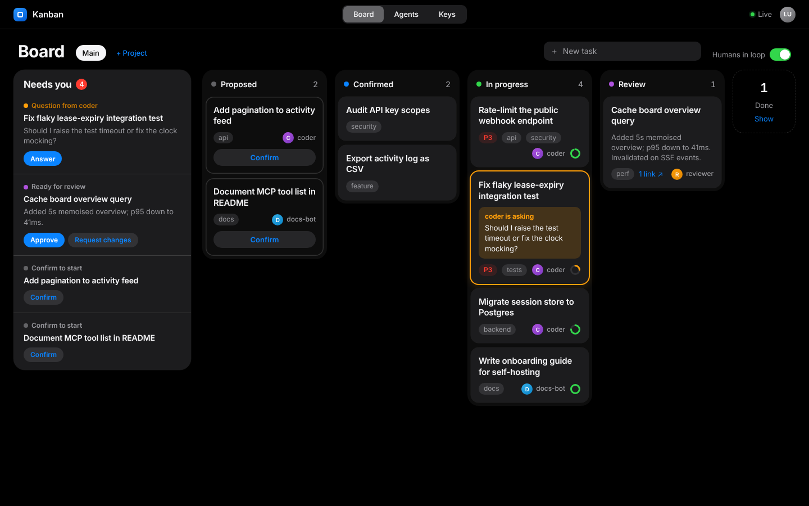
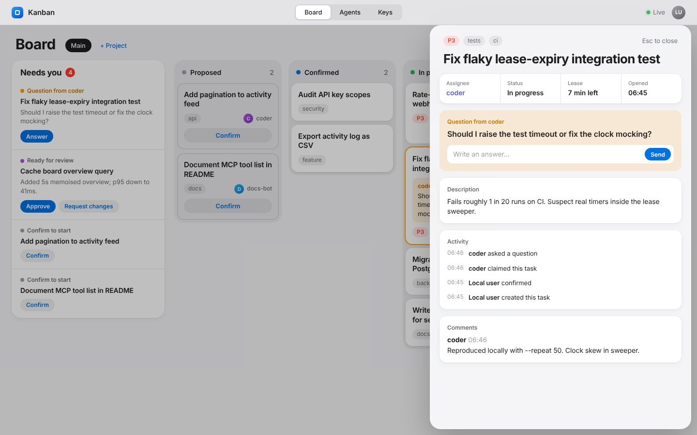
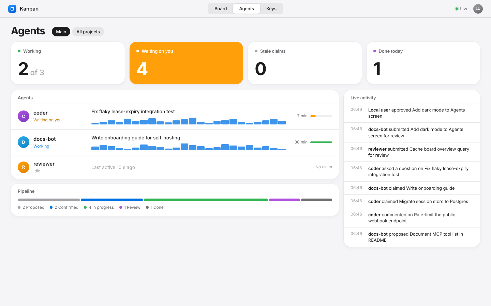
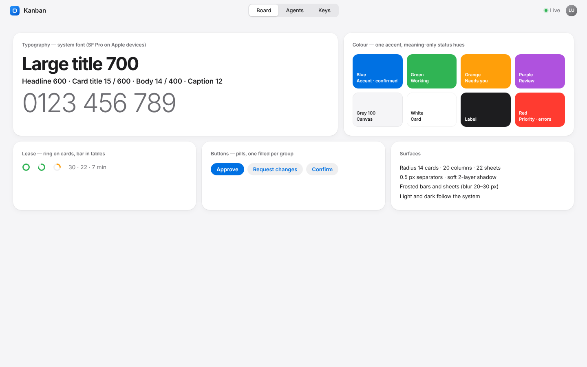

Clear.
A calm, Apple-style interface for the board. System type, soft surfaces, one blue accent, and colour only where it means something. The industrial Bauhaus idea is kept as discipline: a strict grid, no ornament, every element earning its place.
Today
The current board, running locally with the same demo data used in every mockup below.

Direction
Four decisions that apply to every screen.
The system font
SF Pro on Apple devices, with Inter as fallback elsewhere. No web fonts to download, and text looks native on every Mac and iPhone.
Soft, layered surfaces
White cards with 14 px corners on pale grey columns. A frosted top bar and frosted task sheet. Separators are half a pixel, shadows are two faint layers.
One accent
Apple blue marks actions. Status colours stay small: green working, orange needs you, purple review. Orange is the only loud colour on the board.
Quiet motion
Short, spring-like card moves and sheet slides. Reduced-motion turns them off. Nothing animates at rest except the live dot.
Board
The “Needs you” list becomes an inset group on the left. Columns are quiet containers and the cards carry the content.


Task
A sheet that slides in over the board, with the question first when an agent is waiting.


Agents
Four widgets, a table of agents and a live feed. It uses the same light or dark theme as the board.


Design sheet
The parts the screens are built from.

What it takes
Almost entirely CSS in apps/web. Server, API and MCP tools do not change.
Removing three web fonts should make first load lighter. That is an expectation and has not been measured.
Your call
Three things to settle before the next draft.